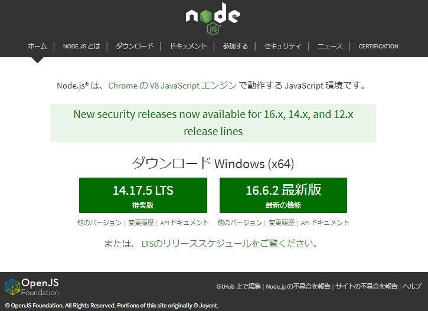
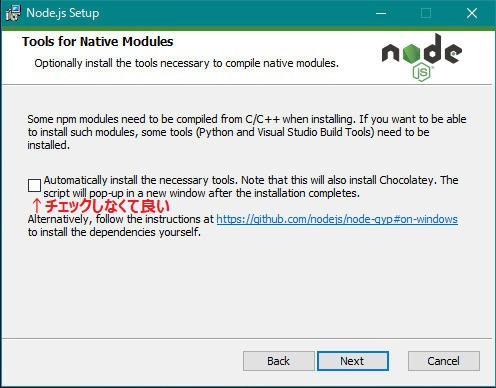
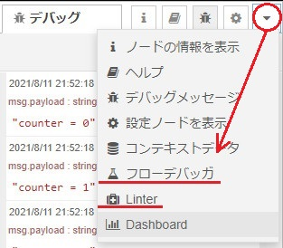

Node-REDのインストール手順は以下の通りです。
- Node.jsのインストール
- Node-REDのインストール
- Node-REDのパッケージのインストール
公式サイトのインストールの説明は、こちらです。
このサイトでは、Windows10 64ビットを使って説明します。
Node.jsのインストール
Node-REDは2021年7月において、12.17以降が必要で、14.xが推奨です。こちらの動画の35sあたりで言ってます。
推奨されたバージョンのNode.jsの場合、そのバージョンのNode-REDおよびNode-RED用パッケージが用意されていますのでスムーズに環境構築ができます。しかし、サポートレベルのバージョンの場合は、ローカルPCでリビルドが必要になる場合があります。（環境によっては、エラーが発生する場合があります。）
以下、Node 14.xのインストールの例を述べます。
まず、こちらからインストーラ（msi）をダウンロードします。

バージョン14系推奨版のファイルをダウンロードし、実行してください。
他のツールは入れなくても構いません。

環境変数NODE_PATHをC:\Users\[YOUR ACCOUNT]\AppData\Roaming\npm\node_modulesで作成し、環境変数パスに%NODE_PATH%を追加してください。(結構、重要ポイントです)
ちなみに、インストールを失敗したり、古いバージョンのものをアンインストールした場合、以下のフォルダを削除してから再実行すると良いかもしれません。
- C:\Program Files\nodejs
- C:\users\[YOUR ACCOUNT]\.node_repl_history
- C:\users\[YOUR ACCOUNT]\.npmrc
- C:\users\[YOUR ACCOUNT]\AppData\Roaming\npm
- C:\users\[YOUR ACCOUNT]\AppData\Roaming\npm-cache
- C:\users\[YOUR ACCOUNT]\.node-red
- C:\users\[YOUR ACCOUNT]\.windows-build-tools
Node-REDのインストール
DOSプロンプトを起動し、以下を実行します。
npm install -g --unsafe-perm node-redNode-REDのパッケージのインストール
Node-RED上でもできますが、DOSプロンプト上で行えば、複数のパッケージをまとめてインストールすることができます。
DOSプロンプトを起動し、以下を実行します。
npm install -g パッケージ名1 パケージ名2 パッケージ名3私がよくお世話になるパッケージは以下です。
- node-red-contrib-csvtojson
- CSVをJSONにパースするノード
- node-red-contrib-fs-ops
- 基本的なファイルシステム操作を実行するためのノード
- node-red-contrib-image-output
- 画像をプレビューするためのノード
- node-red-contrib-watchdirectory
- フォルダーを監視するためのノード
- node-red-dashboard
- Node-REDにダッシュボードを追加する
- node-red-node-base64
- BASE64形式にエンコード/デコードするためのノード
- node-red-node-serialport
- シリアルポート通信するためのノード
バージョン2.0以降の場合は以下も入れておくと便利です。
- node-red-debugger
- ブレークポイントを設定することができます
- nrlint
- ・潜在的な問題を特定するためのリンティングツール
- ・
npm install ～後に、npx nrlint --init > .nrlintrc.jsが必要です
